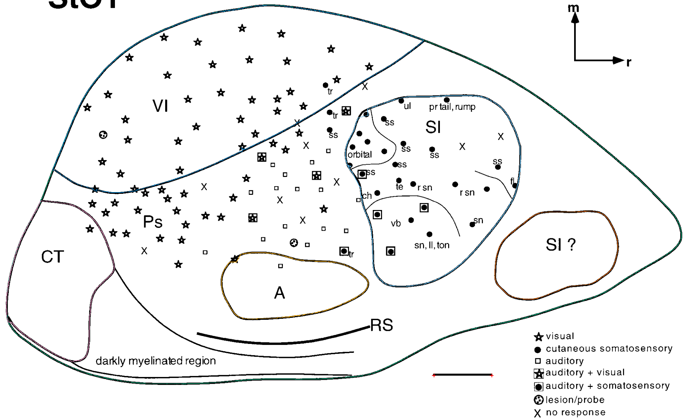

Beck: Figure 3 cortical inset

Huffman: Figure 6

Project-wide review of earlier contours (1990 and 1993)
Contours corrected 15 October 2026. Open the enlarged before/after reviews and switch the contours off to inspect the source line:
Beck & Kaas — refined contours
Huffman et al. — refined contours
Areas and editable ImageJ files regenerated. Huffman Figure 5 now has a combined SII/PV envelope; unsupported individual closures were withdrawn.
All 36 numbered figures assessed. Added 25 measurements of cortical fields or supported mapped portions, with editable ImageJ exports. New traces remain provisional pending anatomical review.
| Paper | Figures assessed | Measurements | Saved results |
|---|---|---|---|
| Beck & Kaas (1998) | 14 | 5 | Measurements · Inventory · Methods |
| Huffman et al. (1999) | 16 | 20 | Measurements · Inventory · Methods |
| Kaas et al. (2011) | 6 | 0 — no eligible specimen flatmaps | Measurements · Inventory · Methods |
Incomplete borders are NA. Repeated tissue and partial views are identified. No certified complete-neocortex denominator was established for these three sources, so whole-neocortex percentages are unavailable. Kaas et al. (2011) contains schematic/projected review figures; its empty measurement table is an assessed result.

Native ImageJ calibration/ROI/mask read-back and numerical checks passed. The saved Krubitzer & Kaas (1993) dataset also passes its existing verification unchanged.
New three-paper precision review
New: next seven papers — precision tracing review
New: final six papers — contour review and completed source queue